3.2.2. Advanced#
3.2.2.1. Limiting the Range of Motion of the End Effector#
This section explains how to limit the range of motion of the end effector.
Run the following to add range-of-motion limitation settings.
In []: from tmc_planning_msgs.msg import TaskSpaceRegion In []: constraint_tsr = TaskSpaceRegion() In []: constraint_tsr.end_frame_id = whole_body.end_effector_frame In []: constraint_tsr.origin_to_tsr.orientation.w = 1.0 In []: constraint_tsr.tsr_to_end = geometry.tuples_to_pose(whole_body.get_end_effector_pose('odom')) In []: constraint_tsr.min_bounds = [-100.0, -100.0, -100.0, -math.pi, -math.pi, -math.pi] In []: constraint_tsr.max_bounds = [100.0, 100.0, 100.0, math.pi, math.pi, math.pi] In []: whole_body.constraint_tsrs = [constraint_tsr]
Run the following to check the current settings.
In []: whole_body.constraint_tsrs
The output shown below has been partially modified for explanation purposes.
Out[]: [tmc_planning_msgs.msg.TaskSpaceRegion(end_frame_id='hand_palm_link', origin_to_tsr=geometry_msgs.msg.Pose(position=geometry_msgs.msg.Point(x=0.0, y=0.0, z=0.0), orientation=geometry_msgs.msg.Quaternion(x=0.0, y=0.0, z=0.0, w=1.0)), tsr_to_end=geometry_msgs.msg.Pose(position=geometry_msgs.msg.Point(x=0.2865095118562522, y=0.07799999989169142, z=0.6731118874800364), orientation=geometry_msgs.msg.Quaternion(x=0.7068251814047126, y=-6.870388518802683e-11, z=0.7073882688680914, w=-2.782076762579085e-11)), min_bounds=array([-100. , -100. , -100. , -3.14159265, -3.14159265, -3.14159265]), max_bounds=array([100. , 100. , 100. , 3.14159265, 3.14159265, 3.14159265]), rotation_first=False)]
The contents of the “min_bounds” and “max_bounds” arrays are shown below.
Index
Orientation
0
X
1
Y
2
Z
3
Roll (tilt around the X-axis)
4
Pitch (tilt around the Y-axis)
5
Yaw (tilt around the Z-axis)
“Roll”, “Pitch”, and “Yaw” are configured with no limits in the range from -π to π [rad].
Run the following to rotate the end effector in the Roll direction.
In []: whole_body.move_to_joint_positions({'wrist_roll_joint': 3.0})

Confirm that the end effector has turned over.
Return the pose once, then set the Roll limitation to 1.0, and execute the same command again.
In []: whole_body.move_to_neutral() In []: constraint_tsr.max_bounds[3] = 1.0 In []: whole_body.move_to_joint_positions({'wrist_roll_joint': 3.0})
Since the target pose is outside the limitation range, the following error will appear.
Out[]: : : MotionPlanningError: GOAL_IN_COLLISION (Fail to plan change_joint_state)
3.2.2.2. Switching the End-Effector Reference Frame#
For end-effector-based motion, you can change the reference frame.
Run the following to check which the HSR frames can be selected as the end-effector coordinate frame.
In []: whole_body.end_effector_frames
Out[]: ('hand_palm_link', 'hand_l_finger_vacuum_frame')
Run the following to check which frame is currently selected as the end-effector coordinate frame.
In []: whole_body.end_effector_frame
Out[]: 'hand_palm_link'
Run the following to move 0.3 [m] along the z-axis of “hand_l_finger_vacuum_frame”. The direction of motion corresponds to the direction of the suction pad on the fingertip.
In []: whole_body.end_effector_frame = 'hand_l_finger_vacuum_frame' In []: whole_body.move_end_effector_by_line((0, 0, 1), 0.3) In []: whole_body.end_effector_frame = 'hand_palm_link'
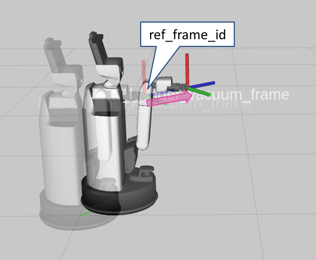
{kind=link}
3.2.2.3. End-Effector-Based Motion Control Using tf#
Run the following to return to the initial pose.
In []: whole_body.move_to_go() In []: omni_base.go_abs(0.0, 0.0, 0.0, 10.0) In []: whole_body.move_to_neutral()
After setting the environment variables in a new terminal, run the following to create a frame named “my_frame”.
Set
ROS_DOMAIN_IDto the value configured when launching the simulator.$ export ROS_DOMAIN_ID=XXX $ source /opt/ros/<ROS_DISTRO>/setup.bash
$ ros2 run tf2_ros static_transform_publisher 2 0 0.5 3.14 -1.57 0 map my_frame
Run the following to align “hand_palm_link” with “my_frame”.
In []: whole_body.end_effector_frame = 'hand_palm_link' In []: whole_body.move_end_effector_pose(geometry.pose(), 'my_frame')
This will play back a motion that aligns the end effector with “my_frame”.
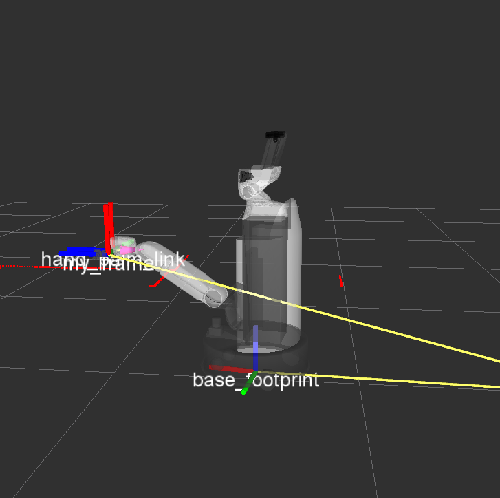
Move the end effector along the z-axis or x-axis with respect to “my_frame”.
Run the following to move the end effector to 0.2 [m] in front of “my_frame”.
Since “Blue (z-axis)” is the forward direction, specify
geometry.pose(z=-0.2).In []: whole_body.move_end_effector_pose(geometry.pose(z=-0.2), 'my_frame')
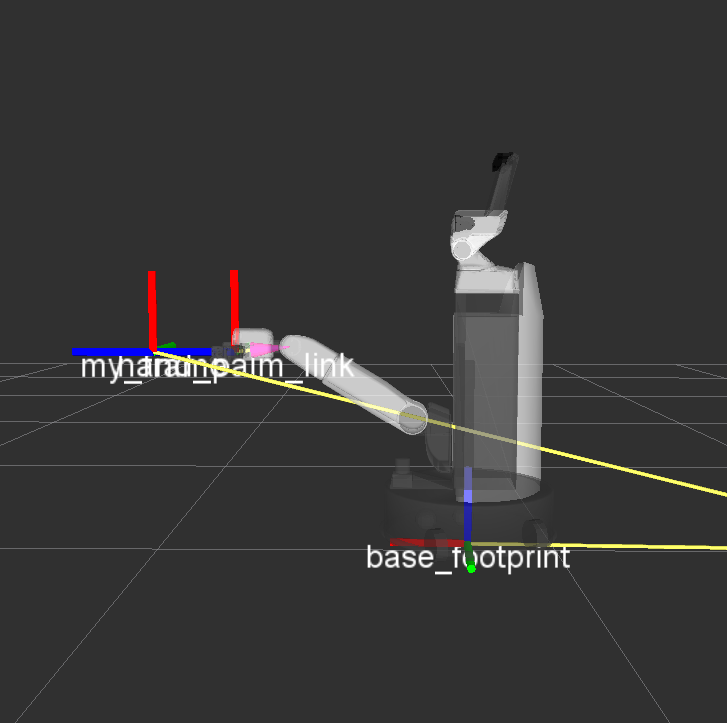
Run the following to move the end effector to 0.2 [m] above “my_frame”.
Since “Red (x-axis)” is the forward direction, specify
geometry.pose(x=0.2).In []: whole_body.move_end_effector_pose(geometry.pose(x=0.2), 'my_frame')
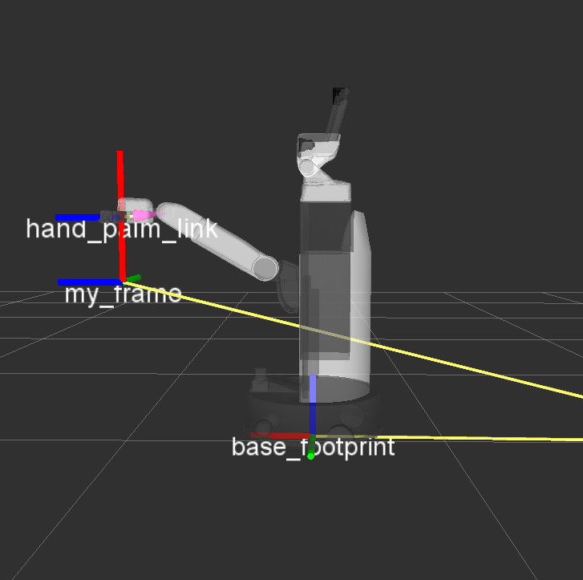
Run the following to rotate the end effector 1.57 [rad] around “Green (y-axis)”.
Rotation around each axis can be specified as “x-axis: ei”, “y-axis: ej”, and “z-axis: ek”.
In []: whole_body.move_end_effector_pose(geometry.pose(x=0.2, ej=-1.57), 'my_frame')
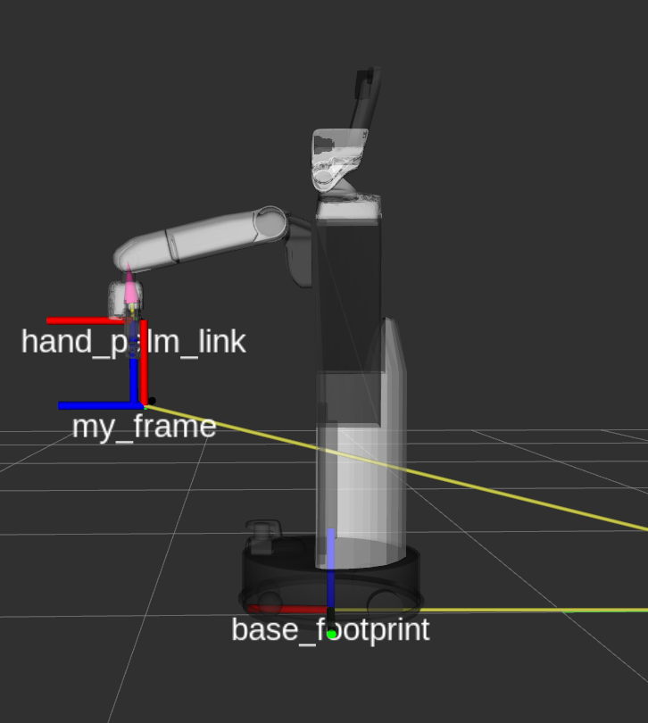
{kind=link}
{kind=link}
{kind=link}
{kind=link}
3.2.2.4. Settings to Look at End Effector After Motion#
When you execute a command following whole_body.move_end_effector_ to perform a pose transition, you can configure the robot to look at the end effector after the transition. whole_body.looking_hand_constraint is False by default.
Run the following to confirm how the behavior changes.
When
looking_hand_constraint = TrueIn []: whole_body.move_to_neutral() In []: whole_body.looking_hand_constraint = True In []: whole_body.move_end_effector_pose(geometry.pose(z=1.0), ref_frame_id='hand_palm_link')
When
looking_hand_constraint = FalseIn []: whole_body.move_to_neutral() In []: whole_body.looking_hand_constraint = False In []: whole_body.move_end_effector_pose(geometry.pose(z=1.0), ref_frame_id='hand_palm_link')
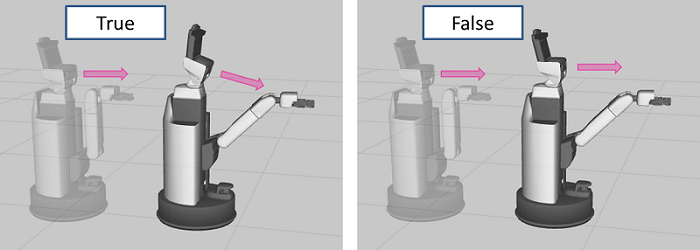
{kind=link}
3.2.2.5. Adjusting the Ratio of Base and Arm Motion#
The HSR uses both the base and the arm joints to transition the end-effector pose.
This section explains “settings that move the base more and the arm joints less”, and conversely, “settings that move the arm joints more and the base less”. The ratio of motion can be configured separately for translation and rotation.
The translation settings are as follows.
In []: whole_body.linear_weight = (weight)
Set
(weight)to a value between 0.1 and 100. Higher values result in smaller motions of the base.Follow the steps below to observe how the motion changes.
Run the following to return to the initial pose.
In []: whole_body.move_to_go() In []: omni_base.go_abs(0,0,0)
When
whole_body.linear_weight = 1.0In []: whole_body.move_to_neutral() In []: whole_body.linear_weight = 1.0 In []: whole_body.move_end_effector_pose(geometry.pose(z=1.0), ref_frame_id='hand_palm_link') In []: whole_body.move_to_go() In []: omni_base.go_abs(0,0,0)
When
whole_body.linear_weight = 100.0Change
whole_body.linear_weight = 1.0to100.0in the above commands and run them.When
whole_body.linear_weight = 0.1Change
whole_body.linear_weight = 1.0to0.1in the above commands and run them.Run the following to restore the value of
whole_body.linear_weight.In []: whole_body.linear_weight = 1.0
The rotation settings are as follows.
In []: whole_body.angular_weight = (weight)
Set
(weight)to a value between 0.1 and 100. Higher values result in smaller motions of the base.Follow the steps below to observe how the motion changes.
Run the following to return to the initial pose.
In []: whole_body.move_to_go() In []: omni_base.go_abs(0,0,0)
When
whole_body.angular_weight = 1.0In []: whole_body.move_to_neutral() In []: whole_body.angular_weight = 1.0 In []: whole_body.move_end_effector_pose(geometry.pose(z=0.5, ei=math.radians(90)), ref_frame_id='hand_palm_link') In []: whole_body.move_to_go() In []: omni_base.go_abs(0,0,0)
When
whole_body.angular_weight = 100.0Change
whole_body.angular_weight = 1.0to100.0in the above commands and run them.When
whole_body.angular_weight = 0.1Change
whole_body.angular_weight = 1.0to0.1in the above commands and run them.Run the following to restore the value of
whole_body.angular_weight.In []: whole_body.angular_weight = 1.0
3.2.2.6. Collision Avoidance#
This section explains how the HSR can move while avoiding collisions with external environments such as furniture.
Run the following to return to the initial pose.
In []: whole_body.move_to_go() In []: omni_base.go_abs(0.0, 0.0, 0.0, 10.0) In []: whole_body.move_to_neutral()
Run the following to add a box.
In []: collision_world.add_box(x=0.3, y=0.3, z=0.3, pose=geometry.pose(x=1.0, y=0.0, z=0.15, ek=0.0), frame_id='map')

The arguments are as follows.
Args: x (float): Length along with X-axis [m] y (float): Length along with Y-axis [m] z (float): Length along with Z-axis [m] pose (Tuple[Vector3, Quaternion] or List of Tuple[Vector3, Quaternion]): A pose of a new object from the frame ``frame_id`` frame_id (str): A reference frame of a new object name (str): A name of a new object timeout (float): Wait known object list for this value [sec]Objects that do not move with respect to the environment, such as furniture, can be represented by setting
frame_id='map'. For moving objects, you can represent objects that move together with a frame by setting that frame asframe_id.Note
The
poseargument can specify multiple poses as a list.If you specify three poses using
geometry.posein theposeargument as shown below, three boxes with the same shape will be added.In []: collision_world.add_box(x=0.3, y=0.3, z=0.3, pose=[geometry.pose(x=0.5, z=0.15),geometry.pose(x=1.0, z=0.15),geometry.pose(x=1.5, z=0.15)], frame_id='map')

Check how the behavior changes when this box is used for collision avoidance and when it is not.
Collision avoidance is enabled by setting the collision checking environment in
whole_body.collision_world.Without collision avoidance
In []: whole_body.collision_world = None In []: whole_body.move_end_effector_pose(geometry.pose(z=1.3), 'hand_palm_link')
In this case, the HSR passes through the box as shown in the figure.

Run the following to return to the initial pose.
In []: whole_body.move_to_go() In []: omni_base.go_abs(0,0,0) In []: whole_body.move_to_neutral()
With collision avoidance
In []: whole_body.collision_world = collision_world In []: whole_body.move_end_effector_pose(geometry.pose(z=1.5), 'hand_palm_link')
In this case, the HSR moves while avoiding the box.
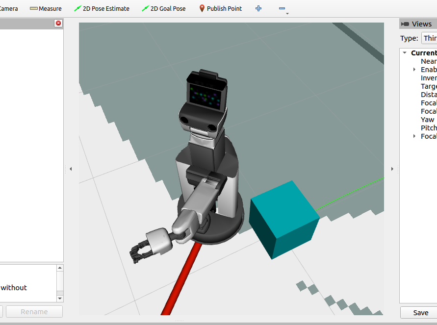
To place other various objects, return the HSR to its original pose and remove all objects. Run the following.
In []: collision_world.remove_all() In []: whole_body.move_to_go() In []: omni_base.go_abs(0,0,0) In []: whole_body.move_to_neutral()
Run the following to place a sphere and a cylinder.
Sphere
In []: collision_world.add_sphere(radius=0.3, pose=geometry.pose(x=1.0, y=1.0, z=0.5))
Cylinder
In []: collision_world.add_cylinder(radius=0.1, length=1.0, pose=geometry.pose(x=1.0, y=-1.0, z=0.5))
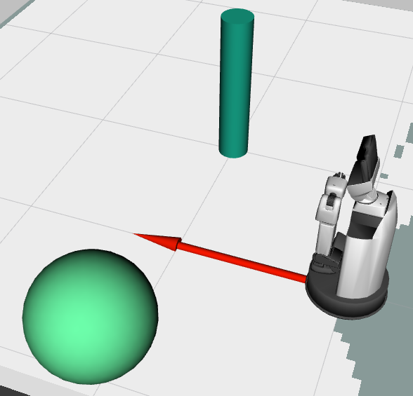
So far we have placed basic shapes, but to handle more complex shapes, specify a triangle mesh file. The supported file format is STL (Standard Triangulated Language).
Download
the sample chair model.Move the downloaded file to
/tmp.Return to the console and run the following to add the chair model to the environment.
In []: collision_world.add_mesh(filename='/tmp/chair.stl', pose=geometry.pose(x=2.0, ei=math.radians(90)), frame_id='map', name='chair')
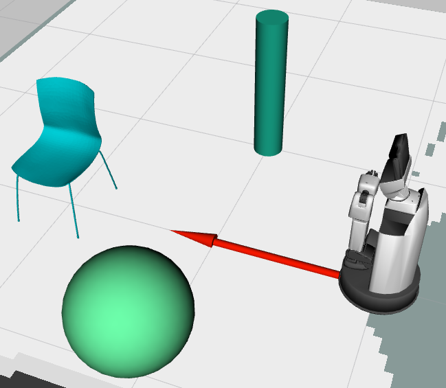
Run the following to move the end effector under the chair.
In []: whole_body.move_end_effector_pose(geometry.pose(x=2.0, z=0.2, ei=math.radians(-180), ej=math.radians(-90)),ref_frame_id='map')
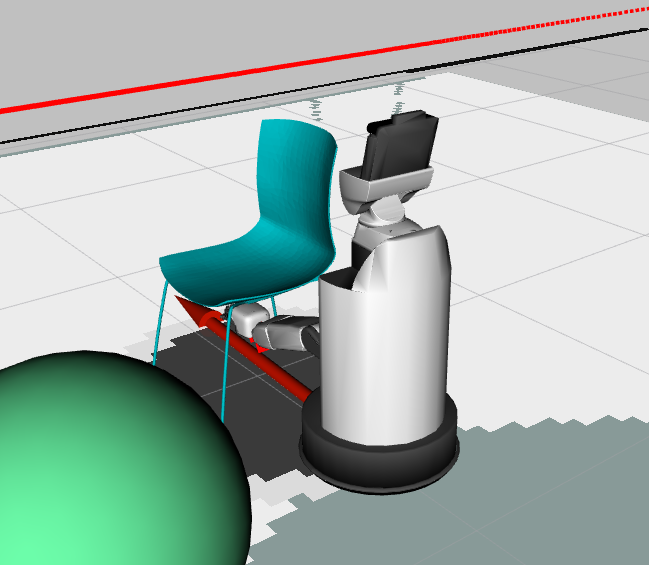
Run the following to move the end effector above the chair.
In []: whole_body.move_end_effector_pose(geometry.pose(x=2.0, z=0.6, ei=math.radians(-180), ej=math.radians(-90)),ref_frame_id='map')
You can confirm motion that avoids collisions.

Return the HSR to its original pose and remove all objects. Run the following.
In []: collision_world.remove_all() In []: whole_body.move_to_go() In []: omni_base.go_abs(0, 0, 0) In []: whole_body.move_to_neutral()
It is also possible to perform collision avoidance while taking grasped objects into account.
Run the following to grasp the cylinder.
In []: collision_world.add_attached_cylinder(radius=0.02, length=0.4, pose=geometry.pose(z=0.025, ej=math.radians(90)), timeout=3.0)
The robot will grasp the cylinder with the end effector, as shown in the figure.
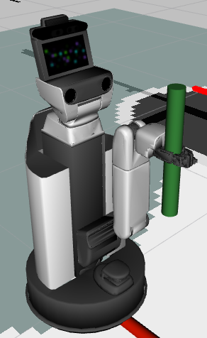
Run the following to move while keeping the object grasped.
whole_body.move_end_effector_by_line((0, 0, 2), 0.3)
Run the following to add a box on the map.
In []: collision_world.add_box(x=0.3, y=0.3, z=0.3, pose=geometry.pose(x=1.0, y=0.0, z=0.65), timeout=3.0)

Run the following to move the end effector under the box.
In []: whole_body.move_end_effector_pose(geometry.pose(1.0, 0.0, 0.25, ej=math.pi / 2.0), 'map')

You can confirm that the motion avoids collisions between the grasped object and the box.
Objects other than cylinders can also be grasped. Run the following to remove the objects and grasp a sphere.
In []: collision_world.remove_all() In []: whole_body.move_to_neutral() In []: collision_world.add_attached_sphere(radius=0.03, pose=geometry.pose(z=0.025), timeout=3.0)

Run the following to grasp a box.
In []: collision_world.remove_all() In []: collision_world.add_attached_box(x=0.4, y=0.04, z=0.04, pose=geometry.pose(z=0.025), timeout=3.0)

Run the following to grasp the chair.
In []: collision_world.remove_all() In []: collision_world.add_attached_mesh(filename='/tmp/chair.stl', pose=geometry.pose(x=-0.55, y=-0.16, z=0.25, ej=math.radians(-90), ek=math.radians(-90)), name='chair')
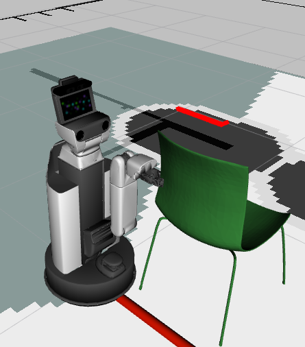
{kind=link}
{kind=link}
{kind=link}
{kind=link}
{kind=link}
{kind=link}
3.2.2.7. Asynchronous Movement#
With asynchronous Movement, you can check the motion status or interrupt the motion.
To move the joints asynchronously, set the plan_only argument to True .
Here, move_to_go is executed asynchronously.
Pass the planned trajectory to whole_body.execute and start the motion.
In []: traj = whole_body.move_to_go(plan_only=True)
In []: whole_body.execute(traj)
Check whether the motion is in progress
In []: whole_body.is_moving()
Stop the motion
In []: whole_body.cancel_goal()
Check whether the motion succeeded
In []: whole_body.is_succeeded()
Waiting until the motion is finished
In []: whole_body.wait_goal()